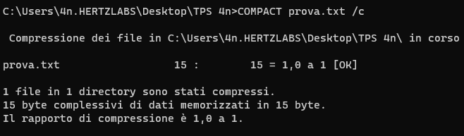

CACLS | Visualizza o modifica gli elenchi di controllo di accesso (ACL) dei file. | comando sostituito da ICACLS |
CALL | Richiama un programma batch da un altro. |  |
CD | Visualizza il nome della directory corrente o consente di passare a un'altra directory. |  |
CHCP | Visualizza o imposta il numero di tabella codici attiva. |  |
CHDIR | Visualizza il nome della directory corrente o consente di passare a un'altra directory. |  |
CHKDSK | Controlla un disco e visualizza il relativo rapporto sullo stato. |  |
CHKNTFS | Visualizza o modifica la verifica di un disco durante l'avvio. |  |
CLS | Cancella lo schermo. | |
CMD | Avvia una nuova istanza dell'interprete dei comandi di Windows. |  |
COLOR | Imposta i colori predefiniti in primo piano e dello sfondo della console |  |
COMPACT | Visualizza o modifica la compressione di file su partizioni NTFS. |  |
CONVERT | Converte volumi FAT in NTFS. Non è possibile convertire l'unità in uso. |  |